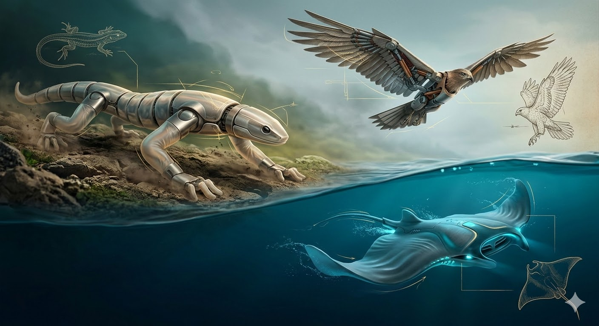
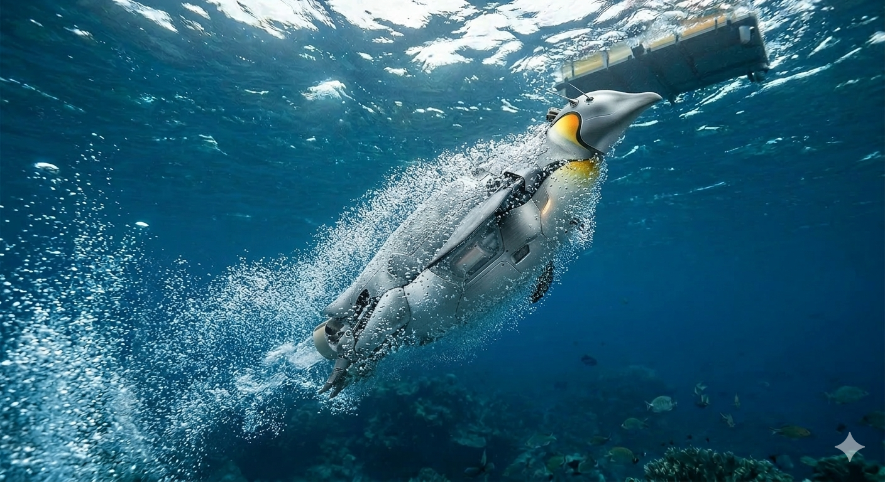
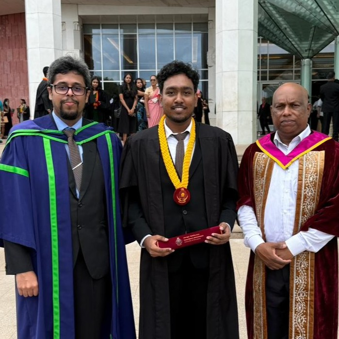
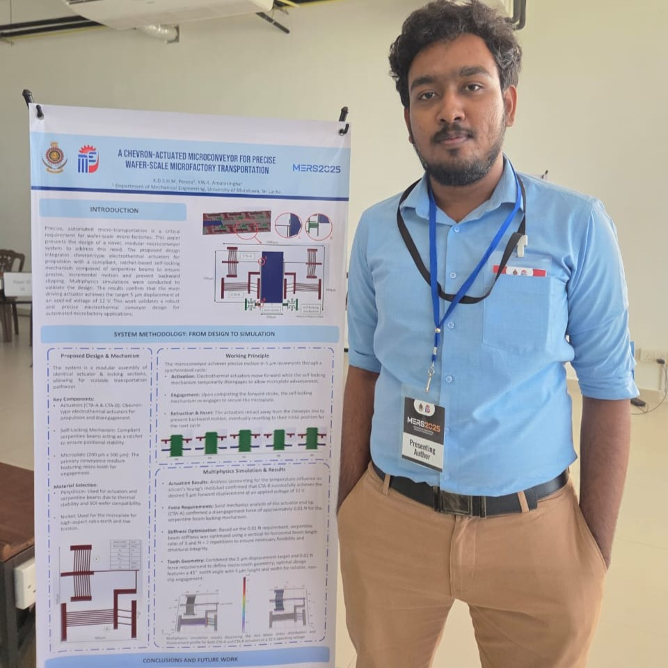
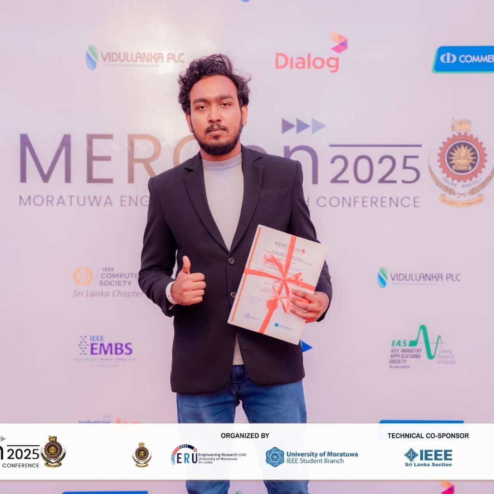
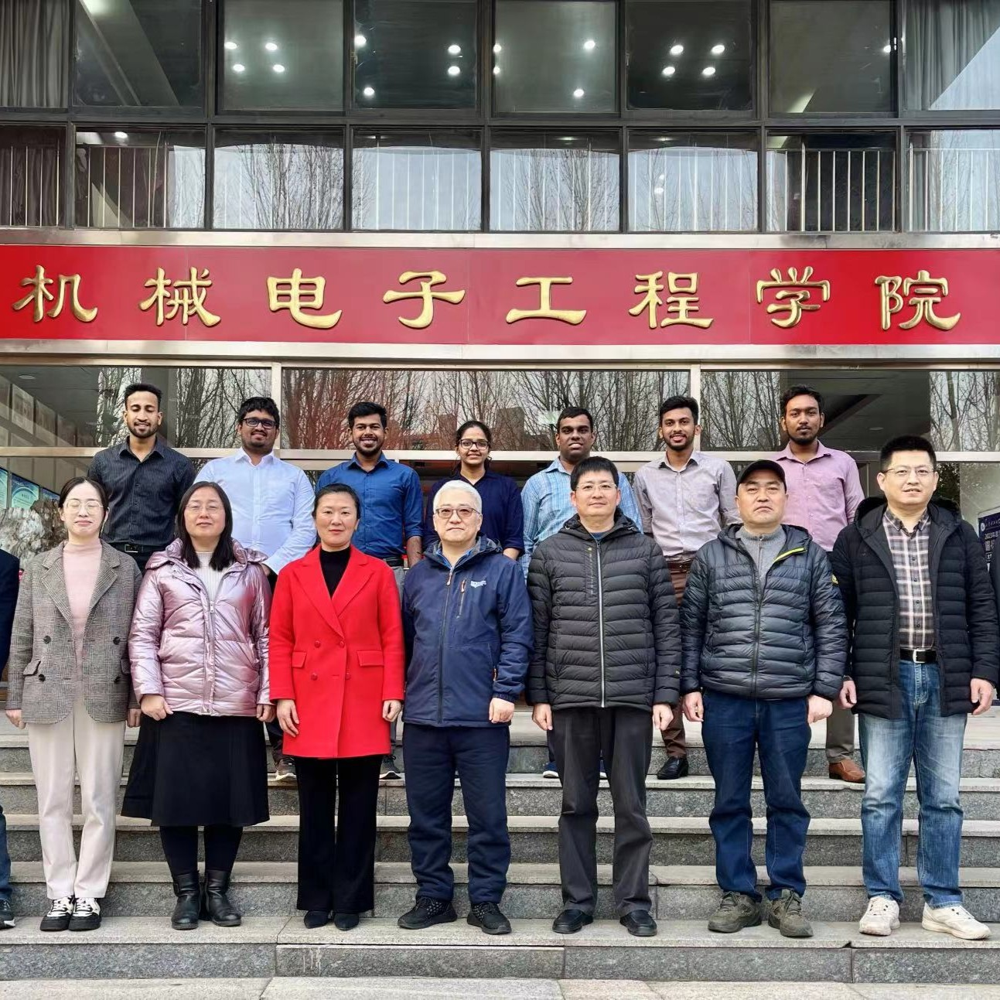

"Nature is the best engineer, and robotics is, at its core,
the art of learning from life."
My primary research interest lies in bio-inspired robotics, where I focus on understanding distinctive animal locomotion strategies and translating those principles into functional robotic designs. I am particularly interested in developing unconventional locomotive robot platforms capable of navigating complex, unstructured environments. My work is inherently multidisciplinary, spanning the full development pipeline of a robotic system including mechanical and mechanism design, hardware prototyping, embedded systems and electronics, mathematical modeling, simulation, and dynamic control. This breadth allows me to approach problems from concept through to physical realization, from deriving the governing dynamics of a novel locomotion strategy to building and validating the platform that demonstrates it. At its core, my research is motivated by the belief that nature's millions of years of morphological and behavioral optimization hold solutions to challenges that conventional engineering has yet to fully address.
Beyond individual platforms, I seek to scale these principles through swarm behavior, deploying decentralized collectives of bio-inspired robots to solve complex tasks in unpredictable, real-world settings. The goal is not merely to mimic nature, but to distill its deepest engineering principles into machines that move, adapt, and collaborate with the same quiet elegance found in living systems.

Profile & Academic Journey
K. D. S. H. M. Perera
Heshan Madusanka
B.Sc. Engineering (Honours)
Technical Skills
Programming
Python, C++, MATLAB, LabVIEW
Robotics
ROS2, micro-ROS, Gazebo, MuJoCo, OpenCV
Design & Analysis
SolidWorks, AutoCAD, Ansys, Adams
Embedded Systems
Arduino, ESP32, Raspberry Pi, Proteus
Web & Data
HTML, CSS, JavaScript, SQL, Flutter
Education
B.Sc. Engineering (Hons) in Mechanical Engineering
2021 - 2025 | University of Moratuwa, Sri Lanka
Specialisation: Mechatronic Systems Engineering
GPA: 3.79/4.00 (Rank: 10/120)
Minor: Mathematics.
GCE Advanced Level (Physical Science)
2017 - 2019 | D.S. Senanayake College, Colombo
Results: 2 A's & 1 B (Z-Score: 2.3409)
Work Experience
Temporary Lecturer
Feb 2025 - Present | University of Moratuwa, Sri Lanka
Temporary Instructor
Aug 2025– Jan 2026 | University of Moratuwa, Sri Lanka
Intern / Student Researcher
Mar 2024 - May 2024 | Shandong University of Science & Tech, China
Intern / Project Engineer
Nov 2023 - Feb 2024 | Dipped Product PLC, Sri Lanka
Achievements & Recognition
- Best Paper Award: Robotics & Intelligent Systems Track, MERCon 2025.
- The Institution Best Project: IMechE - University of Moratuwa (2025).
- Dean’s List: Awarded for Semesters 1, 2, 5, and 7.
Academic & Industrial Projects
Underwater Observation Drone
Design & Development of shallow-sea underwater drone with novel fuzzy-adaptive sliding-mode controller and VR teleoperation interface.
Brachiating Robot
Simulated and built gibbon-inspired robot to investigate dynamic locomotion across variable bars.
Modular Microconveyor
Chevron electrothermal actuators for precise wafer-scale transportation.
Environment Monitoring Station
Implemented real-time environmental monitoring with signal conditioning, processing, remote communication and data visualization (web/mobile).
App-Controlled Mobile Robot
Developed a differential-drive mobile robot with image-based object detection, path planning, and manual/autonomous operation via a mobile app.
Micro-ROS Based Home Automation
development of an IoT smart-home prototype integrating micro-ROS for autonomous temperature-based fan control and web-based lighting/fan management.
Smart Garbage Collector
Collaboratively engineered a mobile robot using image processing to autonomously navigate predefined routes and collect litter.
Web-Based SCADA
Full-stack application for real-time dashboarding and historical data visualization.
Dynamic Work Bar Transfer Mechanism
Designed a pneumatic system to halt and transfer work bars between leaching tanks.
Hydraulic Lifting Platform
Researched and prototyped a hydraulic lift for wheelchair accessibility (Shandong University of Science and Technology).
Research
WS-Ray - Underwater Drone
WS-Ray is a tethered underwater drone developed from first principles, designed for shallow sea coral observation. Its hydrodynamic hull draws inspiration from the body shape of the whale shark, optimizing movement through aquatic environments. The system features a 5-DOF motion capability achieved through a 6-thruster configuration, combined with a tilt-controllable camera that together deliver a full 6-DOF viewing experience for the operator. For motion control, a novel fuzzy adaptive sliding mode controller is employed, enabling robust and precise maneuvering in dynamic underwater conditions.
Brachiation Robot
Bio-inspired robotics draws from nature's solutions to locomotion, with brachiation robots replicating the swinging motion of primates to navigate discontinuous structures. While many systems replicate the overarching motion, their control strategies often rely on complex full-state regulation rather than exploiting natural dynamics. This work presents a simplified control approach where only the reaching hand is actively guided toward the next target while the body swings passively, inspired by gibbon behavior, reducing control complexity while maintaining adaptability to irregular bar spacing and varying heights.
Publications
Brachiation Robot Inspired by Gibbon Dynamics: Insight for Control Across Irregular Bar Spacing and Heights
Moratuwa Engineering Research Conference (MERCon 2025), Moratuwa, Sri Lanka.
Best Paper Award: Robotics & Intelligent Systems
(First author \& presenter)
A Fuzzy-Adaptive Sliding-Mode Control Strategy for Optimizing Control of an Underwater Drone
Moratuwa Engineering Research Conference (MERCon 2025), Moratuwa, Sri Lanka.
(First author \& presenter)
Development of Marine Grade Acrylonitrile – Butadiene – Styrene (ABS) based Hull of an Underwater Drone
Moratuwa Engineering Research Conference (MERCon 2025), Moratuwa, Sri Lanka.
(Co-first author)
CFD-Driven Hydrodynamic Optimisation of a Whale Shark–Inspired Underwater Drone for Shallow Reef Observation
12th International Conference on Heat Transfer and Fluid Flow (HTFF 2025).
(Co-first author)
A Chevron-Actuated Microconveyor for Precise Wafer-Scale Microfactory Transportation
Mechanical Engineering Research Symposium 2025 (MERS 2025), Department of Mechanical Engineering, University of Moratuwa.
(First author)
accepted
WS Ray: Extending Human Perception with a Teleoperated Underwater Drone for Subaquatic Environments
International Conference on Automation Science and Engineering (CASE 2026).
(Co-first author)
Under Review
Research Proposals

Multimodal Bio-inspired Quadrotors
Unmanned Aerial Vehicles (UAVs), particularly multi-rotor platforms, face inherent limitations in performing critical tasks such as infrastructure inspection and long-duration environmental monitoring due to constrained flight endurance and difficulties with controlled perching in unstructured, dynamic environments. While avian-inspired flight provides a common benchmark for bio-mimicry, the complex wing kinematics of birds often prove incompatible with the rigid-frame constraints of Vertical Take-Off and Landing (VTOL) quadrotors. This research proposes an alternative morphological adaptation inspired by the flying squirrel (Pteromyini), whose four-limb tethered membrane, or patagium, and versatile tail offer a morphological blueprint that aligns naturally with the structural symmetry of quadrotor drones. This work aims to investigate the development of a bio-inspired UAV that integrates a deployable, flexible patagium and an active multi-degree-of-freedom tail to enable energy-efficient maneuverable gliding transitions from active rotor-driven flight. Ultimately, this research seeks to facilitate safe perching on surfaces ranging from horizontal to vertical orientations, enhancing mission endurance and environmental interaction in complex settings.

Multimodal Bio-inspired Quadrotors
Autonomous Underwater Vehicles (AUVs) are vital for aquatic operations, yet returning to land remains a technical challenge. Transitioning from the water column back to terrestrial stations involves persistent difficulties in energy density and landing precision. While deployment systems have matured, autonomous recovery represents a technical bottleneck. Biological organisms, such as penguins and flying fish, provide models for overcoming this aquatic-terrestrial interface. Penguins utilize a sophisticated air-lubrication strategy, releasing air trapped within their plumage during ascent to reduce frictional drag by up to 80%. This reduction enables the velocities required to breach the water-air interface. Despite this biological precedent, mechatronic air-film lubrication for robotic leaping is underdeveloped. This research proposes a bio-inspired robotic platform replicating the penguin's plumage-based air collection cycle for high-speed leaping maneuvers. By integrating active attitude control during ballistic flight, this study aims to achieve precise recovery on ground stations. Ultimately, this work establishes a self-sustaining "leap-to-land" mechanism, bridging the gap between aquatic exploration and terrestrial maintenance.
Moments

Graduation Day
A memorable graduation day with Dr. Jayathilaka (Mechatronics Stream Coordinator), and Prof. Amarasinghe (Head of the Department of Mechanical Engineering).

MERS 2025
Presenting my research work at the MERS 2025 poster presentation.

MERCon 2025
Honored to receive the Best Paper Award at MERCon 2025.

Shandong University of Science & Technology, China
During the internship program with Mechatronics stream students and academic staff at Shandong University of Science & Technology, China.